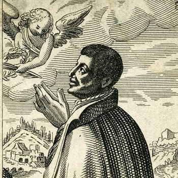

Isusovački blaženici
Isusovac · Svećenik · Mučenik
Bl. Ivan Cornelius
1557.–1594.
Engleski svećenik irskoga podrijetla dugo je želio pristupiti Družbi Isusovoj; nakon uhićenja položio je isusovačke zavjete u zatvoru nekoliko dana prije pogubljenja.
Tekst je preveden i prilagođen uz pomoć umjetne inteligencije.

Izvor slike
- Spomendan
- 4. srpnja
- Zaštitništvo
- Nije navedeno u izvoru
- Životni vijek
- 1557.–1594.
- Djelovanje
- Misije i evangelizacija · Progoni i progonstvo · Mučeništvo
- Razdoblje
- 16. stoljeće
- Pravo ime
- John Conor O’Mahony
- Uhićenje
- 14. travnja 1594.
- Mučeništvo
- Srpanj 1594., Dorset
- Napomena o datumu
- Zaglavlje navodi 4. srpnja, a tijek događaja u tekstu upućuje na 3. srpnja 1594.
U kalendaru zbirke koristi se dan smrti. Taj datum nije zasebna potvrda liturgijskoga spomendana.
Životopis
Ivan Cornelius potjecao je iz irske obitelji u Cornwallu. Njegovo izvorno prezime bilo je O’Mahony, a služio se i imenom Mohun. Nakon Oxforda nastavio je svećeničku pripravu na kontinentu, osobito u Rimu, gdje je upoznao isusovce. Zaređen se vratio u Englesku i godinama služio katolicima iz kuće Arundellovih u Dorsetu.
Želio je stupiti u Družbu Isusovu, ali nije mogao odmah napustiti povjerene vjernike radi novicijata u Flandriji. Uhićen je 1594. nakon izdaje jednoga sluge. Mučenjem su od njega pokušavali doznati imena ljudi koji su mu davali sklonište ili dolazili na katoličko bogoslužje. Odbio ih je izručiti. U zatvoru je položio isusovačke zavjete pred svjedocima.
Povijesni katolički prikaz posebno pamti trojicu njegovih laičkih drugova: Thomasa Bosgravea, Ivana Careyja i Patricka Salmona. Bosgrave je bio uhićen jer je svećeniku, odvedenom gologlavu, pružio vlastiti šešir. Drugoj dvojici pripisivana je pomoć svećeniku. Njihova se optužba razlikovala od Corneliusove, koji je osuđen zbog svećeništva i povratka u Englesku.
Svi su odbili ponudu da promjenom vjere spase život. Cornelius je posljednji pristupio stratištu u Dorchesteru 4. srpnja 1594. Prije smrti molio je za izvršitelje kazne i kraljicu. Njegova priča tako čuva i svjedočanstvo domaćina i slugu koji su dijelili opasnost katoličke svećeničke službe.
Tekst je preveden i prilagođen uz pomoć umjetne inteligencije.
Pročitaj više na izvornoj stranici ↗